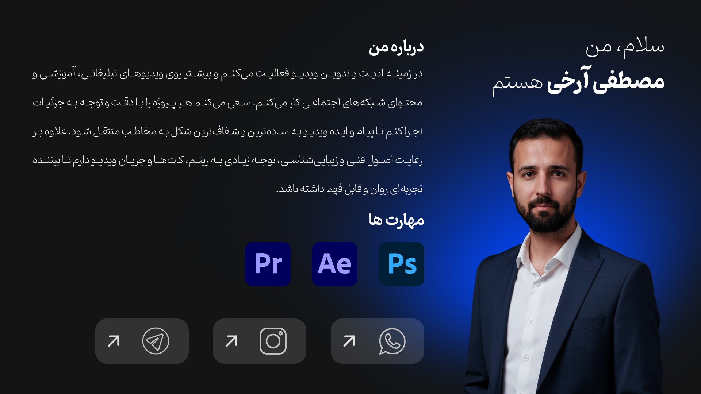
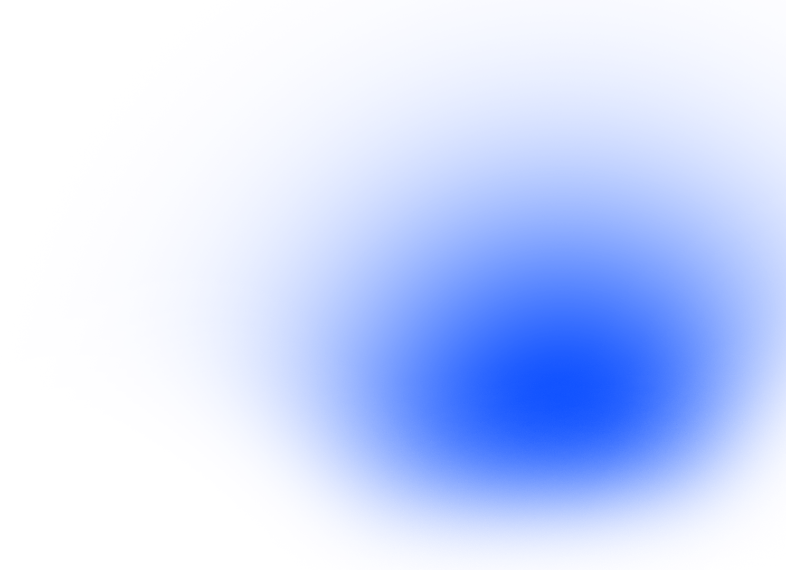
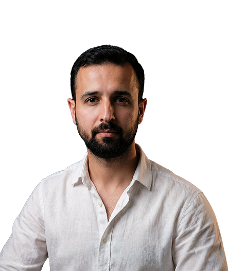
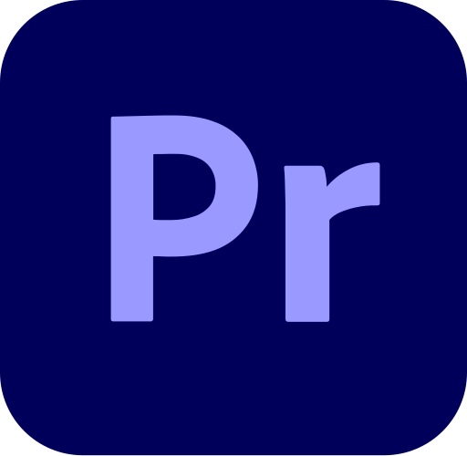
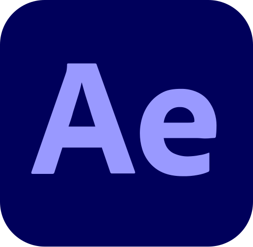

برای پروژه جدید آمادهام
سلام، من مصطفیام.
ویدیوها را
ساده و دقیق تدوین میکنم.
تدوینگر ویدیو هستم و روی ویدیوهای تبلیغاتی، آموزشی و شبکههای اجتماعی کار میکنم.
دقیقدر اجرا
منظمدر تحویل
رواندر تدوین


▶ Video Editor
۰۱ / درباره من
کار من تدوین ویدیو است.
ویدیوهای تبلیغاتی، آموزشی و محتوای شبکههای اجتماعی را تدوین میکنم. سعی میکنم نتیجه کار تمیز، روان و قابلفهم باشد.
ریتم ویدیو، کاتها، رنگ و جزئیات تصویر برایم مهماند. هر پروژه را با توجه به موضوع و مخاطب خودش پیش میبرم.

Premiere Proتدوین ویدیو
↙
After Effectsموشن گرافیک
↙
Photoshopطراحی تصویر
↙۰۲ / پروژهها
نمونهکارها
چند نمونه از کارهایی که در زمینه تدوین و تولید محتوای ویدیویی انجام دادهام.
برای شروع یک پروژه
پیام بدهید.
از طریق تلگرام، اینستاگرام یا واتساپ در دسترس هستم.
 اینستاگرام
اینستاگرام